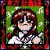
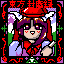

- Welcome to Touhou Wiki!
- Please register to edit. For assistance, check in with our Discord server or IRC channel.
Rika
Rika ɾikä | |
|---|---|
|
 Rika in Story of Eastern Wonderland EngineerMore Character Titles | |
| Species | |
| Occupation | |
| Location |
Just outside the Hakurei Shrine, ??? |
Music Themes | |
| |
Appearances | |
| Official Games | |
| |
Rika (里香) is a tank engineer that appears on Stage 1 and the Extra Stage of Story of Eastern Wonderland, being the boss of those stages, where she creates a large number of monsters and starts hanging around the Hakurei Shrine while Reimu Hakurei is away. The reason for and method of creating all of these monsters and bakebake isn't clear at all.
General Information[edit]
Rika is known to have create machines that she herself created, including a few cannons, the Shrine Tank, the Flower-Tank and the flying tank Evil Eye Σ. Since Rika is an engineer, she ought to have excelled in mathematics, science and even engineering in order to create her tanks. However, on how she's able to do all this herself using Gensokyo's technology is unknown. In her speech patterns, she's shown to use the auxiliary "It's assuredly that—" (～なのです ~nanodesu).
Character Basis[edit]
Name[edit]
Her name is Rika (里香). The kanji in her name can mean "village incense". With different kanji, "Rika" can also refer to "science" in Japanese. There's a possiblity that her name may've also been based on Rika Kayama, who is a psychiatrist.
Design[edit]
In Story of Eastern Wonderland's official art, Rika has brown eyes, long brown hair in two braids, wears a white shirt with a purple bow beneath its collar and she holds a piece of chalk in her left hand. Her vague sprite shows that she has black hair, wears a grey shirt, a red cape, and what appears to be black trousers of some sort. In the Extra Stage, she has purple (brown?) eyes, long purple (brown?) hair in two braids, white horns and wears a strange red hat. She also wears a purple shirt with a red ribbon in front.
Rika's Appearance[edit]
- Story of Eastern Wonderland
- Main article: Story of Eastern Wonderland/Story
During Stage 1 of Story of Eastern Wonderland, Reimu Hakurei and Genji encounters Rika as a "suspicious character", who stated that everything on the stage was created by her, which includes the bakebake, a few cannons and the Shrine Tank. She then attacks Reimu with the Flower-Tank that she's created with no apparent reason, but is defeated quickly. Sobbing, she wanted Reimu to follow her into a trap, which Reimu refuses and heads on to another direction.
Later during the Extra Stage, Reimu once again encounters Rika, who reveals her name and that this is the "trap" she wanted Reimu to come to: to fight her flying tank Evil Eye Σ. They talk about that Reimu followed Rika during Stage 1, then Reimu's battle with the Evil Eye Σ would've been Stage 2, which is breaking the fourth wall. After a long harsh battle, Rika is defeated and the Evil Eye Σ lets out a huge explosion for the player to dodge. This made Reimu wonder if she's truly the strongest, but Genji insisted it's thanks to the Yin-Yang Orbs.
Additional Information[edit]
- Rika was the first boss ever in a Touhou Project shooting game with the Flower-Tank, as well as the first Extra Stage boss with the Evil Eye Σ. With this, she is also the first character ever to be a stage boss and an Extra boss in the same game, with Alice Margatroid and Okina Matara being the only other Touhou characters to do this.
- Rika said in Story of Eastern Wonderland that she created the Bakebake on the first stage of Story of Eastern Wonderland, but it's unknown if the bakebake in other games (as well as the entire of Story of Eastern Wonderland) were also created by her.
- Rika is the only character in the series to pilot a vehicle during a boss fight - tanks that she herself constructed. This also shows that she's the only character in the whole series to not fight in flesh without any abilities or magic whatsoever. This could therefore make her the weakest character in the gaming series, since she has no ability to fight herself.
- Rika and Fujiwara no Mokou are the only two Extra bosses in the series that are known to be completely human.
Fandom[edit]
Official Profiles[edit]
Official Sources[edit]
- 1997/08/15 Story of Eastern Wonderland - Stage 1 dialogue, Extra Stage dialogue
| This page is part of Project Characters, a Touhou Wiki project that aims to write proper descriptions for all official characters of Touhou Project. Please keep the character page guidelines in mind when contributing. |